01
Section 1 · Zenmap Host Discovery
I started in Zenmap with a Ping scan across both lab subnets
(nmap -sn 172.30.0.0/24 172.31.0.0/24). Nmap reported 11 hosts up out of 512
addresses scanned.
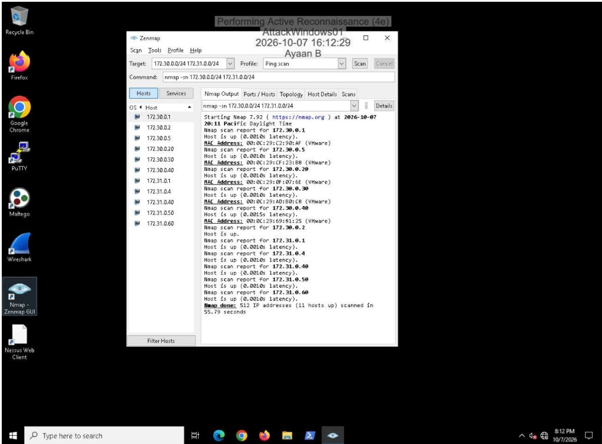
A Quick scan plus against selected hosts filled in services and OS guesses. Host details for
172.30.0.20 showed the host up with open ports and a Windows-family OS match
at high accuracy.
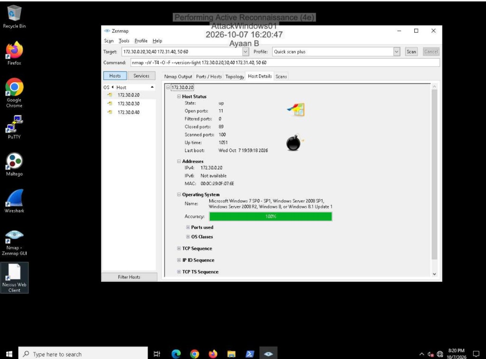
172.30.0.20.Documented addresses and operating systems from that pass:
172.30.0.20— MS Windows 7 / Server 2008 SP1 and R2 / Windows 8 or 8.1172.30.0.30— MS Windows Server 2012 R2 Update 1172.30.0.40— MS Windows Server 2016 build 10586–14393
An Intense scan topology view showed how those hosts clustered relative to the scanner; a later SYN-style profile scan produced a similar topology for the six focused targets.
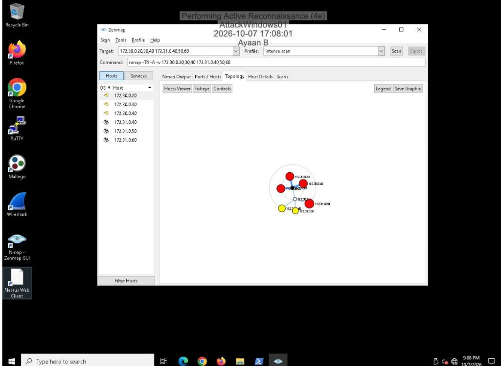
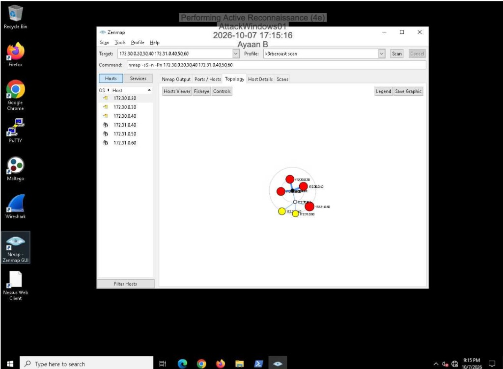
02
Section 1 · Wireshark and the SYN Scan
With a new Zenmap profile selected (command line visible in the UI), I captured traffic in
Wireshark for a SYN scan of 172.30.0.20 port 22. Filtering to that host and
port showed the half-open sequence: SYN from the scanner, SYN-ACK from the target, then RST
from the scanner instead of completing the handshake.
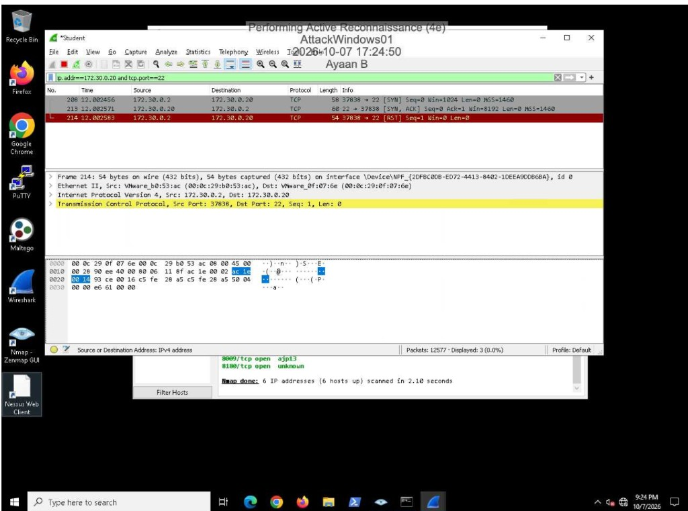
03
Section 1 · Nessus Vulnerability Scan
In Nessus I created a new policy named k3rberoast_Policy from the Basic Network
Scan template, then reviewed a high finding: MS17-010 (plugin 97833)—the SMBv1 remote code
execution family tied to EternalBlue / WannaCry-class issues, with patch and SMBv1-disable
guidance in the plugin text.
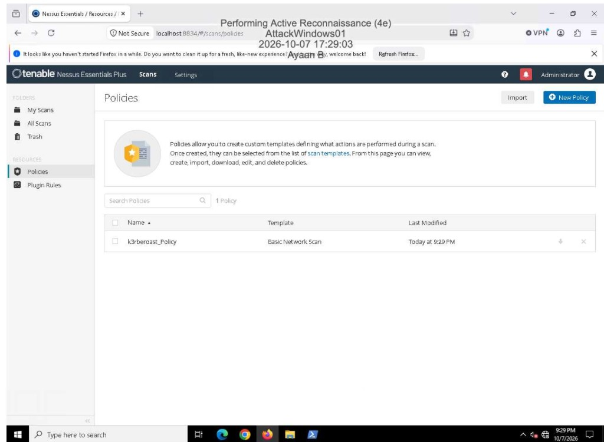
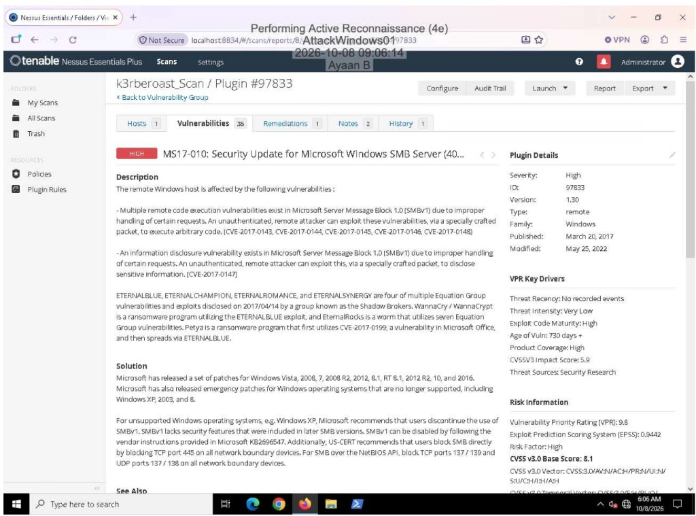
04
Section 2 · Nmap on Kali
On AttackLinux01 I ran a TCP ACK scan against 172.30.0.20
((nmap -n -Pn -sA -F -T5). All 100 scanned ports came back filtered
(no-response)—consistent with a firewall dropping the probes rather than clear open/closed
answers.
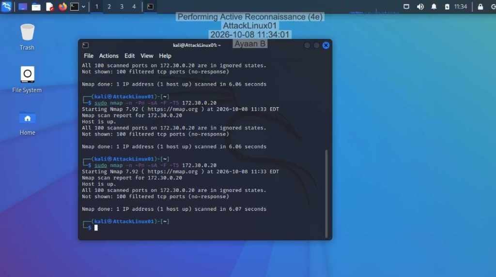
172.30.0.20.I also ran an NSE ssh-hostkey script against 172.31.0.60 on port
22. Port 22 was open and the script returned DSA and RSA host-key fingerprints (VMware MAC
on the host).
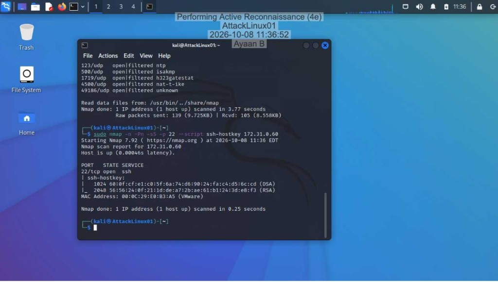
ssh-hostkey script results.05
Section 2 · TCP Connect in Wireshark
For a TCP Connect scan of 172.30.0.20 port 22, Wireshark showed a four-packet
sequence: SYN, SYN-ACK, ACK (handshake completes), then RST-ACK to tear the connection
down—different from the three-packet SYN stealth pattern earlier.
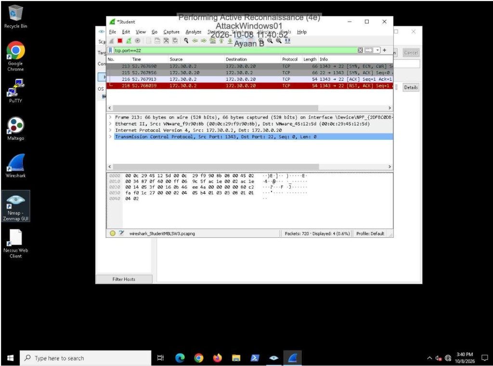
06
Section 2 · OpenVAS Finding
In Greenbone / OpenVAS I opened the details for a high MySQL / MariaDB weak-password finding
on 172.31.0.40:3306. Detection reported login as root with password
password, product CPE for MySQL 5.7.34, and the usual remediation path of
hardening credentials.
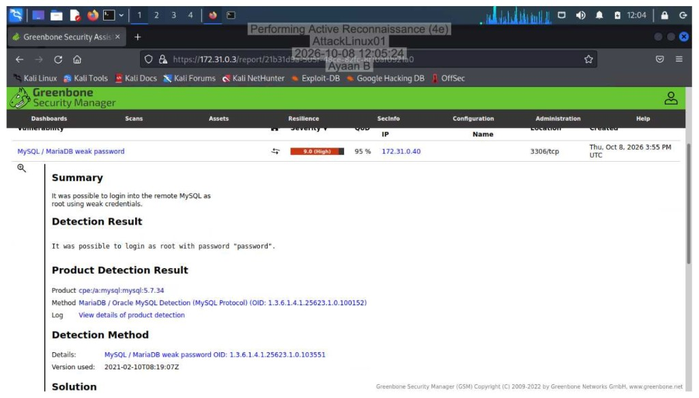
07
Section 3 · Challenge
For the UDP challenge I scanned port 53 on 172.30.0.1
((nmap -sU -p 53). The port reported open as domain.
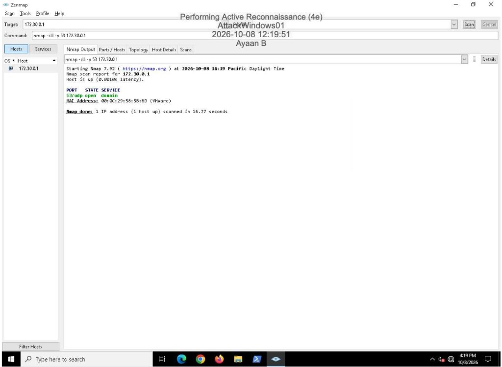
172.30.0.1.I also created a new Zenmap profile and used it to scan 172.31.0.60 on ports
22, 80, and 443. Results: 22/tcp open (ssh), 80/tcp open (http), 443/tcp closed.
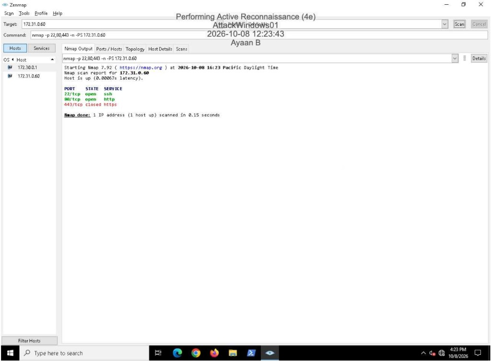
172.31.0.60.